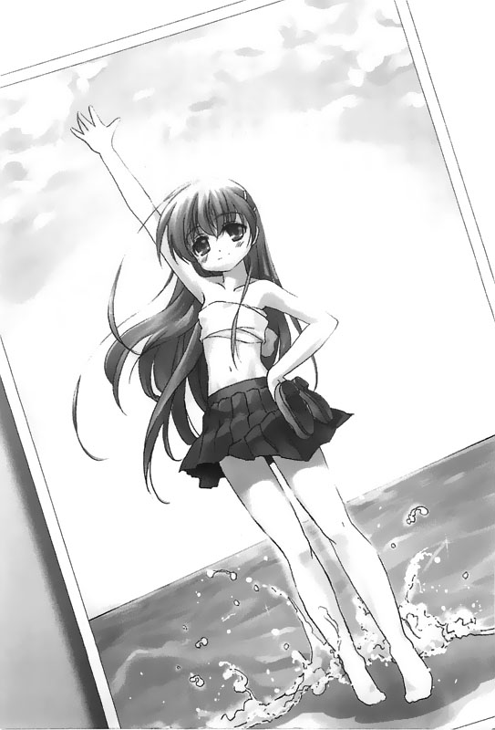

回到顶部

前往底部

04.エメラルドの海 ver.2


二月的海水蓝得清澈透明。刺骨的冷风夹着寒意，时而拂过松林传来阵阵的窸窣声，风声与海潮声交织着在宁静的景致中回荡在我们耳边。
「我说，就只有这个而已了啦。」
我将手中印有「白石工业」四个字的毛巾递出去交给她。这是我们之前擦身体时用的毛巾。
「………………」
「拜托，你也用不着摆出这张脸吧？」
「……知道啦。」
她露出了些许不满的表情接过了我手中的毛巾。
她忽然对我说她想要一件泳衣，让我觉得非常困扰。在现在这种时节，在这样的地方，而且她要的还是一件比基尼泳衣，这么任性的要求让我真是十足伤透了脑筋。
我只好在车上找找看有没有什么东西能够拿来充数，结果怎么找也只找到这条混在我偷摸来的衣物堆里的这条毛巾。
她拿走毛巾之后离开了一会儿，结果竟然将毛巾缠在胸前，然后穿着那条日前买的，她非常心爱的裙子回来。
「……怎么样？」她问。
「呃……你这么问我还真不知道该怎么回答你……」
「很……奇怪吗？」
「嗯……大概吧……」
「………………」
「——啊，没有啦！不会很奇怪——一点也不奇怪啦，真的。」
「嗯……好啦……」
看来她似乎是接纳了这个说法，转身便朝着海浪拍打着的海滩潮线上缓缓跨了出去。
浅滩上的浪涌上来之后又退了回去。冰冷的海风撩起来了她的长发，天空似乎担心着这样的天气不够寒冷，特地还洒下了绵绵的细雪。她脱下鞋子，将鞋子提在手上，带着喜孜孜的脸庞赤脚踩着潮线上的浪花。
「喂，你看我看起来像个杂志模特儿吗？」她对着我问。
「嗯——还可以吧？」
寒风中，我和她呼出的气息全部化成了白烟，答了话之后，我提起了方才从车上拿下来的相机——就是之前在车上找到的那个便宜的即可拍相机——这台相机里头还残留最后一张空白的底片。
「那我要拍下来哦！」我说。
「咦？」
「拍出来的照片肯定会让你看起来更可爱的——来吧！」
我边说边提起了相机，将镜头对准了她。
「………………」
「好了，你就别不好意思了吧——快点！」
「……嗯。」
我透过镜头抓住了站在潮线上她的全身。此时，她不知道是因为紧张还是害羞，脸上表露出了比起以往任何时候都要来得复杂的表情。
「喂，你也摆个像样的姿势嘛？」
「……可是……」
「不要可是了——快点，像你这样呆呆站着怎么像个杂志模特儿呢？」
「……好啦。」
她强忍着内心的羞怯，带着一张红通通的脸庞将一手放在自己的腰上。同时高高举起了另一只手，将手笔直地伸向蔚蓝而深邃的冬季天空——好似要抓住什么似的，直挺挺地朝着天空伸展着。
我看着她，「你还少一个动作……」
「……什么？」
「你忘了要笑了啦。」
「咦？」
「……笑一个嘛，濑津美。」
「………………」
「……你年纪比我小耶……凭什么直呼人家的名字……」她说。
接着，她便初次在我的面前展露了笑容——她穿着自己心爱的那条短裙，胸前包裹着一条用来充当比基尼泳装的白色毛巾，对着我手中的即可拍镜头展露了笑容；背对着如翡翠般呈现蓝绿的海水，像个平面模特儿一般对着镜头展露了笑容……
「好了！那接下来换一个更有动感的姿势再拍一张吧！」我说。
「嗯！」
她提起了脚步，带着愉快的表情在水边玩了起来。
虽然我手中的相机底片用光了，不过我仍抓着这台即可拍用镜头持续地捕捉着她的身影。
「哦？我看你好像已经进入状况了哦？」
「才、才没有呢……」
在我们爽朗的对话声中，天空似乎担心着这样的温度不够浇熄我们的热情，因而特地增加了风雪的强度。而我仍提着底片用尽的即可拍，透过镜头凝视着那张脸上写满了兴奋的表情的濑津美。那一副娇小的身躯，即便在寒风拍打之下，仍带着一张遗忘许久的笑容对着镜头看过来。
——哗哗……
「……那我们就玩到这里吧……」
她丢下了这么一句话之后，转身便像之前两次一样，朝着大海中央缓缓迈开了脚步。
「啊，对了，你的驾照……」
她忽然想起了这件事，于是转过头来对望着我。
「不用还我了啦，你就把它当成纪念品带走吧。」
「嗯，好……」
她点点头，又将掏出来的纸片收进了口袋。
那张驾照是我之前送给她的。它之前留在我手上，原本已经完全失去了它存在的价值，却又在过去的几个礼拜内重新找回了它存在的意义。
她收起了那张驾照之后，接着也解下了绑在她手上的白色塑胶手环，然后将它递给了我。
「你这是……要给我的吗？」我问。
「嗯，拿去吧……」
「喔……那我就当成纪念品收下了。」
我接过了她的手环，然后收进了自己的口袋里头。
「……我说呀，我之前告诉你的条文——就是那个七楼病房的病患之间口耳相传的条文，你还记得吗？」
「记得，因为那是你在我住进去的第一天告诉我的嘛。」
七楼病房的病患之间口耳相传的条文……
——第三次核发出院许可的时候我们就该有心理准备了，因为不可能会有第四次。
——绝对是最好的方法，因为这么做最能够减轻我们带给自己家人的负担……
这是属于我们这些即将永远与世隔绝的居民们的箴言和教条。
「……在那些条文后面呀……我还想再追加一条……你会帮我传下去吧？」说完之后，她举起手，摆出一副好比一位知名偶像歌手一般的姿势——
「当你比其他人早一步离开的时候……要为还活着的人留下一抹笑靥……」
——说完，濑津美的脸上也随之展露了微笑。
「………………」
「你还没有把这些条文传给其他人过……所以就拜托你啰……」
她将这句话当成是她留在这个世界上的最后一句话，噤口后转身便朝着大海中央再次跨出了步伐，但我看着她的背影，没让她就这么离开。
「……让我再问你一个问题好吗？」我说。
「嗯。」
「这次……你希望我阻止你吗？」我问。
「………………」
「还是你希望我对于你的这个决定，在你背后推你一把呢？」
面对我的提问，她佇足停下脚步，但却站在原地没有回头。
推过来的浅浪盖住了她的脚掌。一阵狂风刮过远浪，掀起了绵密的飞沫，冷冰冰地打在她的身上。
……我不知道此时此刻的我究竟是该伸手阻止她好，还是该从背后推她一把好。或者我根本应该和她一起结束自己的生命……我真的不知道，但我想大概无论是谁面对这个情况也不会知道。
人在面对自己身上的痛楚时，无论多痛都可以强忍下来，却无法忍受出现在别人心里的折磨——如果人性的本质真的是如此美丽而脆弱，那么到底有谁可以忍心制止她这般『任性的行为』呢……
此时，濑津美回过头来了。
「……我不知道耶，呵呵……我真的不知道呢。」她说。
接着，她对我展露了笑容——冷冰冰的飞沫随着狂风洒下，她在眼角的泪光之中为我留下了这么一抹微笑。
她走了。
前两次的她总在海浪的潮线末端停下脚步，然而，这次她却没有……
我想，这就是她最后留给我的答案吧……
「……就这样吧……拜拜……」
——就这样，我和她一起走过的，960公里的旅程结束了。
对我而言，这趟仅仅十七天的旅程，对她来说总共历时了二十二年之久。而这趟旅程的终点，既不是在医院里的七搂病房，也不是在她的家里。她凭着自己的意志而避开了这个既定的结局。
她成了200×年中推定共三万五千名自杀死亡的人数中的其中一个——她的名字叫作濑津美，血型是0型，二十二岁，女性……手环的颜色是白色。对于濑津美，这短短的几行叙述已经是她的全部了。
但我知道……
我知道她喜欢比基尼泳装；我知道她对于道路分布的情况比起卫星导航更来得清楚；我知道她的睡相很差……
她喜欢车子，拥有一般自小客车驾照；她总是不会将喜怒形于脸色，但偶尔也会露出一些羞怯而别扭的表情。
这天，她背对着翡翠色的大海，提起脚，高兴地踩着水花，为我留下了一个彷佛平面模特儿般的笑容。
然而，她这般耀眼的笑容在便宜的即可拍相机里头，却仅仅只占据了一张的底片容量。
但是这么一张底片，却也是我和她共同拥有的一段记意。
我抬头望着冬季的天空——
这天的天空蓝得让人感到哀伤；这天的阳光也让人感到刺眼——这天，是我和濑津美共同拥有的，冬季里的某一天。
